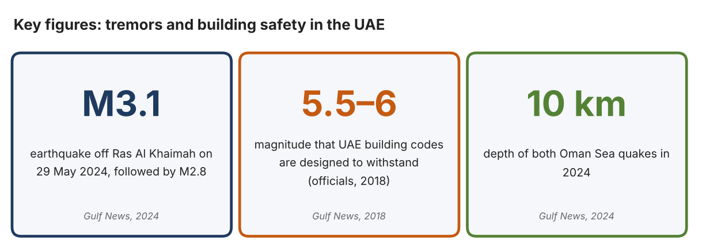
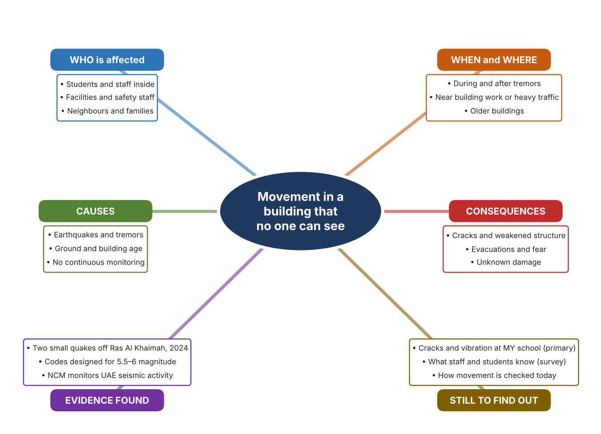
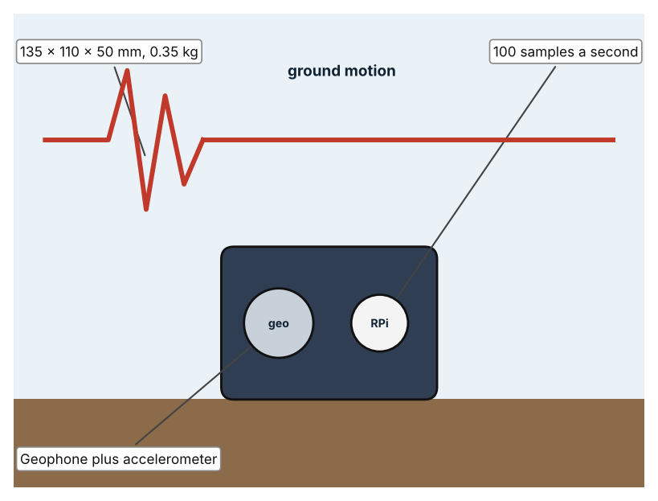
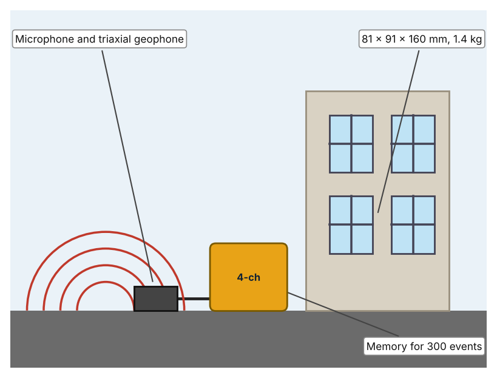
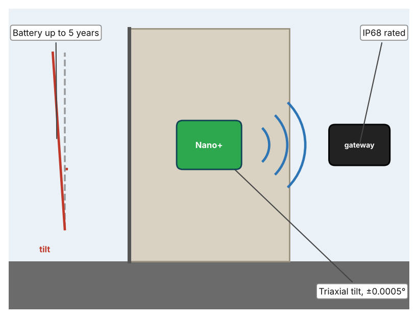

A1 · Design need
Identify and explain the problem faced by your client and community.
My client is the Facilities and Estates Team of a Dubai school, represented by the Estates Manager. The team looks after the school building and wants to be sure that it stays safe. Staff and students felt nervous after hearing about recent tremors in the region, and the team needs a way to know whether the building is moving or vibrating in ways that could signal a problem, instead of relying on appearance alone.
The people most affected are the students and staff who spend their days in the building, because they depend on it being safe. The estates team is a second group, because it decides when to inspect or evacuate. Neighbours and families are a third group, because they want reassurance that the school is safe after a tremor.
The need is real because tremors do reach the UAE, even if damage has not been reported. On 29 May 2024 the National Center of Meteorology's seismological network detected two earthquakes off the coast of Ras Al Khaimah, of magnitude 3.1 and 2.8, at a depth of 10 km, and the report states they had no effect in the UAE (Gulf News Report). After the 2018 Iran earthquake, officials said UAE buildings are designed to withstand tremors of magnitude 5.5 to 6, that the UAE is not a locally active seismic zone, and that risk to older buildings depends on structure, materials, soil conditions and age (Kazmi). Officials describe the risk as low, but I do not know how my own building behaves.
Figure 1 summarises the key numbers. One report is from 2024 and the other from 2018, and both come from newspapers, so I treat them as a pattern and not as proof about my building. In my own words: a low risk is not a zero risk, and a building cannot tell anyone when it has moved. Figure 2 is my mind map of the problem.
320 words


A2 · Research plan
Six research questions of different types, each with a priority, a research type and evidence.
| # | Question | Priority | Primary / secondary | Evidence | Brief answer |
|---|---|---|---|---|---|
| 1 | Factual: What earthquakes recently affected the UAE region, and how were they detected? | High | Secondary | Gulf News, 29 May 2024 (Appendix A, Source 1) | M3.1 at 12:12 am and M2.8 at 1:53 am off Ras Al Khaimah, both at 10 km depth, detected by the NCM seismological network; the report says they had no effect in the UAE. |
| 2 | Factual: What do officials say about the safety of UAE buildings? | High | Secondary | Gulf News, 2018 (Appendix A, Source 2) | Codes are designed to withstand magnitude 5.5 to 6; Dubai Municipality's minimum standard is 5.5; risk to older buildings depends on structure, materials, soil and age. |
| 3 | Conceptual: How are ground shaking and building tilt measured? | Medium | Secondary | Raspberry Shake (Source 3); Instantel (Source 4); Senceive (Source 5) | Geophones measure ground velocity and accelerometers measure acceleration; triaxial tilt sensors detect very small angle changes; vibration monitors record events on several channels. |
| 4 | Debatable: Should schools monitor movement with a seismometer, a construction-style vibration monitor, or building tilt sensors? | Medium | Secondary | Appendix A, Sources 3, 4 and 5 | A seismometer shows ground shaking, a vibration monitor records events at a site, and tilt sensors show slow movement of the structure. Each answers a different question. My view: I need to decide which question matters most. |
| 5 | Debatable (challenges my assumption, UAE source): The UAE is not seismically active, so monitoring building movement in a school is unnecessary. | High | Secondary | Gulf News, 2018 (Source 2); Gulf News, 2024 (Source 1) | Officials call the UAE not a locally active seismic zone, but tremors still occurred in 2024 and risk for older buildings depends on age and soil. I found no data on my own building, so the case must come from my measurements. |
| 6 | Factual (primary): What cracks, vibrations or movement can be seen or felt around our school, and what do staff and students know about building safety? | High | Primary | Own building observation and survey (Appendix A, Sources 6 and 7) | [Student data needed: write the observations (with permission from the estates team) and survey averages, then two sentences on the pattern you see.] |
A3 · Existing products
Three significantly different products, each analysed with ACCESS FM, with pros and cons.
Product 1: Home seismograph (Raspberry Shake RS4D)

Illustration by the author based on the Raspberry Shake global technical specifications (Appendix A, Source 3). [Student: replace with a photo from the source, cited MLA 9]
Product 2: Site vibration monitor (Instantel Minimate Plus)

Illustration by the author based on the Minimate Plus listing, Specto Technology (Appendix A, Source 4). [Student: replace with a photo from the source, cited MLA 9]
Product 3: Wireless tilt sensor (Senceive Nano+)

Illustration by the author based on the Senceive brochure, Aptella (Appendix A, Source 5). [Student: replace with a photo from the source, cited MLA 9]
ACCESS FM analysis
| ACCESS FM | Product 1 | Product 2 | Product 3 |
|---|---|---|---|
| Aesthetics | Compact enclosure with ports on a Raspberry Pi; looks are not described. | Rugged case; looks are not described (Specto). | Small node fixed to a surface; looks are not described (Aptella). |
| Cost | Price not in the specification. | Price on request (Specto). | Price not in the brochure. |
| Customer | Citizen scientists and researchers. | Engineers who monitor blasting or pile driving. | Engineers monitoring buildings, tunnels and rail. |
| Environment | 1.5–2.3 W; 5.1 V DC supply. | Battery not listed. | Nano+ battery up to 5 years; FlatMesh nodes up to 15 years. |
| Size | 135 × 110 × 50 mm; 0.35 kg. | 81 × 91 × 160 mm; 1.4 kg. | Size is not stated. |
| Safety | Standard and IP67 enclosures; the IP67 version is 160 × 90 × 90 mm. | Measures vibration and air overpressure; not a warning system by itself. | IP68 rated. |
| Function | One vertical velocity channel (0.7–44 Hz) plus a three-axis ±2g accelerometer; 100 sps. | Records vibration and overpressure at 1,024–16,384 samples a second per channel. | Reports tilt of ±0.0005° every 2 seconds over a wireless gateway of up to 1,000 sensors. |
| Materials | Materials are not stated. | Materials are not stated. | Materials are not stated. |
Pros and cons
| Product 1 | Product 2 | Product 3 | |
|---|---|---|---|
| Pro | Low-cost way to see ground shaking in real time. | Records vibration events with microphones and geophones. | Detects tiny, slow changes in a structure and reports wirelessly. |
| Con | Shows ground motion, not what happens to a particular building. | Does not report on its own and the price is on request. | Does not measure shaking and the price is not given. |
A4 · Design brief
Restate the need, summarise the research and the existing products, and state the design intent.
My client, the Facilities and Estates Team of a Dubai school, needs a way to know whether the school building is moving or vibrating in a way that could signal a problem. The problem is real: two earthquakes of magnitude 3.1 and 2.8 were detected off Ras Al Khaimah in May 2024 (Appendix A, Source 1). Officials say UAE buildings are designed to withstand magnitude 5.5 to 6 but that risk for older buildings depends on structure, materials, soil and age (Appendix A, Source 2).
My research shows that the risk is described as low, but that nobody can see small movement without instruments (Appendix A, Sources 2 and 3). My sources are newspaper reports from 2018 and 2024, so I need my own evidence. My debatable questions led me to decide that seismometers, vibration monitors and tilt sensors each answer a different question, and my challenged assumption (that a low-risk country needs no monitoring) showed me that low risk is not a reason to stop checking. I will gather my own evidence with the building observation and the survey, always with permission (Appendix A, Sources 6 and 7).
I analysed three very different existing solutions. A home seismograph measures ground velocity and acceleration at 100 samples a second, but it shows ground motion and not the building's behaviour (Appendix A, Source 3). A site vibration monitor records vibration and air overpressure with memory for 300 events, but its price is on request (Appendix A, Source 4). A wireless tilt sensor detects changes of ±0.0005° and lasts up to five years on a battery, but it does not measure shaking (Appendix A, Source 5). They give me three ideas for inspiration: sensing the ground, recording events, and watching slow movement. Each has a weakness that another covers.
My design intent is therefore to create a solution that senses vibration or movement in a building and shows when it is beyond normal levels. It must be affordable for a school, simple for estates staff to read, safe to install, and reliable for long periods. I have deliberately not fixed what form it will take. That decision will be made in Criterion B, after I analyse my own observations and survey against the evidence in Appendix A.
375 words
Appendix A · Research notes and sources
Secondary sources in MLA 9, with notes and where each source is used.
| # | Source (MLA 9) | Key notes | Used in |
|---|---|---|---|
| 1 | Gulf News Report. “UAE Residents Feel Slight Tremors as Two Minor Earthquakes Hit Oman Sea.” Gulf News, 29 May 2024, gulfnews.com/uae/uae-residents-feel-slight-tremors-as-two-minor-earthquakes-hit-oman-sea-1.1716955039185. Accessed 21 Oct. 2026. | M3.1 at 12:12 am off Ras Al Khaimah and M2.8 at 1:53 am, both 10 km deep; NCM network detected both; body says no effect in the UAE although the headline says residents felt tremors. | A1; A2 Q1 and Q5; A4. |
| 2 | Kazmi, Aftab. “Iran Quake: UAE Buildings Structurally Sound, Officials Say.” Gulf News, 15 Sept. 2018, gulfnews.com/uae/iran-quake-uae-buildings-structurally-sound-officials-say-1.1171874. Accessed 21 Oct. 2026. | Codes designed for magnitude 5.5–6; Dubai Municipality minimum 5.5; NCEMA says not a locally active seismic zone; older building risk depends on structural system, materials, soil and age. Source is from 2018. | A1; A2 Q2 and Q5; A4. |
| 3 | “Global Technical Specifications.” Raspberry Shake, raspberryshake.org/media/global-technical-specifications.pdf. Accessed 21 Oct. 2026. | RS4D: one vertical geophone (4.5 Hz) and a three-component ±2g accelerometer; 100 sps; 0.7–44 Hz; 2.3 W; 135 × 110 × 50 mm, 0.35 kg; Ethernet; Raspberry Pi 3B. | A2 Q3 and Q4; A3 Product 1; A4. |
| 4 | “Instantel Minimate Plus (Refurbished).” Specto Technology, www.spectotechnology.com/product/instantel-minimate-plus/. Accessed 21 Oct. 2026. | Vibration and air overpressure; microphone and triaxial geophone; 1,024–16,384 S/s per channel; 300 events; 81 × 91 × 160 mm; 1.4 kg; price on request; the page's meta text refers to another model. | A2 Q3 and Q4; A3 Product 2; A4. |
| 5 | “Senceive Wireless Monitoring Brochure.” Aptella, 2019, www.aptella.com/wp-content/uploads/2019/08/Senceive-Brochure-ver2.pdf. Accessed 21 Oct. 2026. | Nano and Nano+ triaxial tilt sensors, ±0.0005°, 2 s reporting, Nano+ battery up to 5 years, IP68; ODS laser displacement; GeoWAN range up to 4 km in urban areas; gateway for up to 1,000 sensors. | A2 Q3 and Q4; A3 Product 3; A4. |
| 6 | Primary: building observation sheet, completed by the student on [date]. Accessed own data. | [Student: summarise your counts.] | A2 primary question; A4. |
| 7 | Primary: survey of [number] people, completed on [date]. | [Student: summarise your averages.] | A2 primary question; A4. |
Primary research instrument 1: building observation sheet
Student walks the school with the estates team's permission and records only visible cracks and where vibration is felt, never touching or climbing anything.
| Area | Visible crack (Y/N) | Width (mm, estimate) | Vibration felt (Y/N) | Source of vibration | Notes |
|---|---|---|---|---|---|
| Main hall wall | |||||
| Corridor floor | |||||
| Outside wall | |||||
| Near building work |
Primary research instrument 2: survey
Rate each statement from 1 (strongly disagree) to 5 (strongly agree). Collect responses with permission and record no names.
| Statement | 1 | 2 | 3 | 4 | 5 | Total responses |
|---|---|---|---|---|---|---|
| I have felt the building shake or vibrate at school. | ||||||
| I know what to do if a tremor is felt. | ||||||
| I would feel safer if the building's movement were measured. | ||||||
| The school tells us when the building has been checked. |